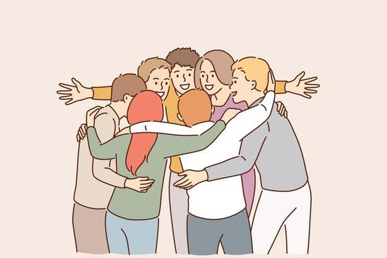

Strategi untuk Mencari Bantuan
Hubungi Layanan Darurat
Jika kamu merasa dalam bahaya atau membutuhkan bantuan segera, hubungi nomor darurat seperti polisi atau ambulans
Gunakan Hotline Perlindungan Anak
Panggil hotline perlindungan anak di nomor 116 untuk mendapatkan bantuan dan dukungan dari pemerintah.
Temui Konselor atau Psikolog
Temui konselor atau psikolog untuk mendapatkan dukungan emosional dan konseling yang membantu dalam mengatasi dampak psikologis dari perundungan
Ikuti Kelompok Dukungan
Bergabunglah dengan kelompok dukungan untuk bertemu dengan orang lain yang mengalami pengalaman serupa dan berbagi pengalaman serta strategi untuk mengatasi perundungan
Cari Sumber Daya Online
Jelajahi sumber daya online, seperti situs web organisasi kesehatan mental atau forum diskusi daring, untuk mendapatkan informasi dan dukungan tambahan